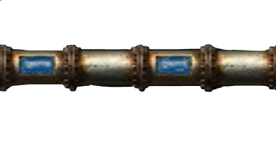
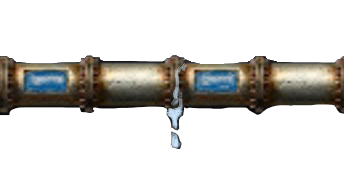
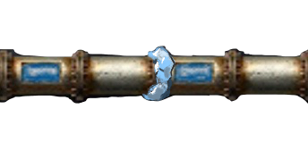
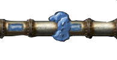
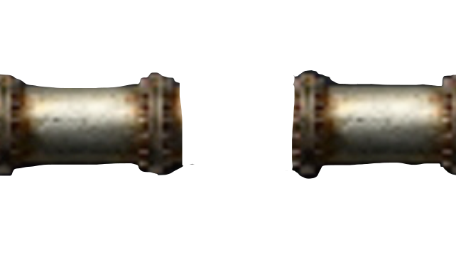

The tubes will have five states--normal. starting to leak, having small ice, having big ice and broken.
 This is normal tube. It will have a probability to leak.
The leaking tube will start freezing if not repaired.
 Then the freezing tube will have ice stuck on it.
 The ice will become larger as time passed.
 If the pipe is still not fixed, it will brust.